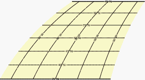

The MAPGRID function plots a map graticule (or grid) onto an existing IDL map graphic.
The following lines create the graphic shown at the top of this topic.
; Create a map projection with a grid.
map = MAP('Mercator', LIMIT=[35,-15,60,35], $
LONGITUDE_MIN=-15, LONGITUDE_MAX=35, $
FILL_COLOR = "light blue", $
TITLE='Europe Map Grid')
m1 = MapContinents(FILL_COLOR="white")
; Change grid properties.
map.mapgrid.LABEL_POSITION = 0
; Change the lat/lons separately.
map['Latitudes'].LABEL_ANGLE = 90
map['Longitudes'].LABEL_ANGLE = 0
; Bump the alignment of a single longitude.
map['15W'].LABEL_ALIGN = 0
; Create another map grid.
grid = MAPGRID(COLOR="red", $
FILL_COLOR="yellow", TRANSPARENCY=50, $
LONGITUDE_MIN=-5, LONGITUDE_MAX=27, $
LATITUDE_MIN=42, LATITUDE_MAX=56, $
GRID_LONGITUDE=2, GRID_LATITUDE=2, $
LABEL_SHOW=0)
; Change some grid properties.
foreach gline, grid[['42N','56N']] do gline.thick = 2
foreach gline, grid[['5W','27E']] do gline.thick = 2
See Map Examples for additional examples using the MAPGRID function.
graphic = MAPGRID([ Properties = variable ])
Properties can be set as keywords to the function during creation, or retrieved or changed using the "." notation after creation.
Note: Unlike other keywords in IDL, you cannot use an abbreviated form of the property name when setting them during creation. Instead, you must use the full property name.
ANTIALIAS , BOX_ANTIALIAS , BOX_AXES , BOX_COLOR , BOX_THICK , CLIP , COLOR , FILL_COLOR , FONT_NAME , FONT_SIZE , FONT_STYLE , GRID_LONGITUDE , GRID_LATITUDE , HIDE , LABEL_ALIGN , LABEL_ANGLE , LABEL_COLOR , LABEL_FILL_BACKGROUND , LABEL_FILL_COLOR , LABEL_FORMAT , LABEL_POSITION , LABEL_SHOW , LABEL_VALIGN , LATITUDE_MAX , LATITUDE_ MIN , LONGITUDE_MAX , LONGITUDE_MIN , LATITUDES , LONGITUDES , LINESTYLE , NAME , THICK , TRANSPARENCY , UVALUE , WINDOW , ZVALUE
The MAPGRID function returns a reference to the created graphic. Use the returned reference to manipulate the graphic after creation by changing properties or by calling methods.
None
None
Properties can be set as keywords to the function during creation, or retrieved or changed using the "." notation after creation.
Note: Unlike other keywords in IDL, you cannot use an abbreviated form of the property name when setting them during creation. Instead, you must use the full property name.
By default anti-aliasing is used when drawing lines. Set this property to 0 to disable anti-aliasing.
Set this property to turn on antialiasing for box axes. The default value is 0.
Set this property to draw box-style axes for Map graphics.
|  |
|
| BOX_AXES not set | BOX_AXES set |
|---|
If the values of the GRID_LATITUDE or GRID_LONGITUDE properties are changed, or if the limits of the map are changed, the box axes are recalculated to fit to the new grid line locations.
Once added, box axes can be hidden by setting the MAPGRID object's BOX_AXES property to 0.
m1 = MAP( /TEST, /BOX_AXES, LIMIT=[35, -95, 65, -45] )
; Hide the box axes
m1.MAPGRID.BOX_AXES = 0
You can change the properties of box axes using the COLOR , BOX_ANTIALIAS , BOX_COLOR , and BOX_THICK properties.
Set this property to a string or RGB vector that specifies the color of the box axes only. When BOX_COLOR is set, the white boxes remain white, but the other boxes change color.
m1 = MAP( /TEST, /BOX_AXES, LIMIT=[35, -95, 65, -45] )
; Change the color ONLY for box axes
m1.MAPGRID.BOX_COLOR = 'blue'
The BOX_THICK property controls the thickness of the box axes. You can specify the integer values 1 through 4 (1 = thinnest, 4 = thickest). The default value is 1.
; Change the box axes to be as thick as possible
m1 = MAP( 'Equirectangular', /BOX_AXES, BOX_THICK=2 )
m1.MAPGRID.BOX_THICK=4
Set this property to 1 to clip portions of the graphic that lie outside of the dataspace range, or to 0 to disable clipping. The default is 1.
Set this property to a string or RGB vector that specifies the color of the grid lines and box axes. If BOX_COLOR has already been set, the COLOR property only affects grid line color. The default value is "black".
m1 = MAP( /TEST, /BOX_AXES, LIMIT=[35, -95, 65, -45] )
; Change the color of grid lines AND box axes
m1.MAPGRID.COLOR = 'blue'
Set this property to a string or RGB vector that specifies the color of the filled background. Set this property to a scalar -1 to turn off the fill (this is the default).
Set this property equal to a string specifying the IDL or system font for the labels. The default value is “Helvetica”.
Set this property equal to an integer specifying the font size for the labels. The default value is 9 points.
Set this property equal to an integer or a string specifying the font style for the labels. Allowed values are:
|
Integer |
String |
Resulting Style |
|
0 |
"Normal" or "rm" |
Default (roman) |
|
1 |
"Bold" or "bf" |
Bold |
|
2 |
"Italic" or "it" |
Italic |
|
3 |
"Bold italic" or "bi" |
Bold italic |
The longitude grid spacing, in degrees.
The latitude grid spacing, in degrees.
Set this property to 1 to hide the graphic. Set HIDE to 0 to show the graphic.
Set this property to the left-right alignment of the text labels, where 0.0 is left justified, 1.0 is right justified, and 0.5 is centered. The default value depends upon the LABEL_POSITION and LABEL_ANGLE.
Note: Setting either LABEL_POSITION or LABEL_ANGLE will reset the LABEL_ALIGN to its default value.
Set this property to the rotation angle of the text labels, in degrees from 0 to 360. Set this property to -1 to automatically compute the angle for each grid line (this is the default behavior).
Set this property to a string or RGB vector that specifies the color of the label text. The default is the same as the COLOR.
Set this property to 1 to fill the label background. The default is 0, unfilled.
Set this property to a string or RGB vector that specifies the color to use if the label background is filled. The default is -1, which makes the label background have the same color as the window background.
Set this property to a string giving the name of an IDL function to be used as a callback when constructing the grid labels. If this property is a null string, then the default labels are used. The default label has two different styles:
If you want more control over the grid labels, then you can set the LABEL_FORMAT property to an IDL function name. The callback function is called with four parameters: Orientation , Location, Fractional , and DefaultLabel , where:
The function will be called multiple times, each time passing in a different orientation and location, until all of the longitude and latitude labels have been computed. The function should return a scalar string representing the label for that particular grid line. As an example, save the following code into a file mapgrid_labels.pro :
function MapGrid_Labels, orientation, location, fractional, defaultlabel
if (location eq 0) then $
return, orientation ? 'Equator' : 'Prime Meridian'
degree = '!M' + STRING(176b) ; Use the Math symbol
label = STRTRIM(ROUND(ABS(location)),2) + degree
suffix = orientation ? ((location lt 0) ? 'S' : 'N') : $
((location lt 0) ? 'W' : 'E')
return, label + suffix
end
Now execute the following command:
m = MAP(/TEST, LABEL_FORMAT='MapGrid_Labels')
Note: If any of the GRID_LONGITUDE, GRID_LATITUDE, LONGITUDE_MIN/MAX, or LATITUDE_MIN/MAX properties are changed, then the function will be called again to compute the new labels.
Set this property to a number between 0 and 1 giving the normalized label position along the grid line. The default is 0.5, which centers the labels.
Set this property to 1 to insert labels (the default behavior), or to 0 to hide the labels.
Set this property to the vertical alignment of the text labels, where 0.0 is bottom justified, 1.0 is top justified, and 0.5 is centered. The default value depends upon the LABEL_POSITION and LABEL_ANGLE.
Note: Setting either LABEL_POSITION or LABEL_ANGLE will reset the LABEL_VALIGN to its default value.
The maximum grid latitude, in degrees.
Minimum latitude, in degrees, to include in the grid.
Maximum longitude, in degrees, to include in the grid.
Minimum longitude, in degrees, to include in the grid.
This property retrieves an array of MAPGRIDLINE objects, representing the latitude lines. See the LONGITUDES property below for a list of the available properties.
This property retrieves an array of MAPGRIDLINE objects, representing the longitude lines. You can get and set the following properties on the retrieved MAPGRIDLINE objects:
|
Property |
Description |
| ANTIALIAS |
Set to 1 to enable anti-aliasing for the line. |
| COLOR | A string or RGB vector containing the line color. |
| FONT_NAME | The font name for the label. |
| FONT_SIZE | The font size (in points) for the label. |
| FONT_STYLE | An integer or string giving the font style for the label. |
| HIDE |
Set to 1 to hide the crosshair, 0 to show. |
| LABEL_ALIGN |
A number giving the left-right alignment of the label. |
| LABEL_ANGLE | The rotation angle of the text labels, in degrees. |
| LABEL_COLOR | A string or RGB vector giving the label color. |
| LABEL_FILL_BACKGROUND | Set to 1 to fill the label background. |
| LABEL_FILL_COLOR | A string or RGB vector giving the label background color. |
| LABEL_FORMAT | A string giving the name of a callback function. |
| LABEL_POSITION | A number from 0-1 giving the label position along the line. |
| LABEL_SHOW | Set to 1 to show the label, 0 to hide. |
| LABEL_VALIGN | A number giving the vertical alignment of the label. |
| LINESTYLE |
An integer or string giving the line style. |
| LOCATION |
The location (in degrees) of the grid line. |
| NAME |
The name of the graphic. |
| THICK |
The thickness of the line. |
| TRANSPARENCY |
The percent transparency of the line. The default is 50. |
| UVALUE |
An IDL variable of any data type. |
| ZVALUE | The Z coordinate for the line. |
For example, use the LONGITUDES property to hide the labels on every other grid line:
m = MAP('Equirectangular', GRID_LONGITUDE=10)
mg = m.MAPGRID
mlons = mg.LONGITUDES
for i=0,N_ELEMENTS(mlons)-1,2 do mlons[i].LABEL_SHOW=0
Note: Changing one of these properties will only affect that particular MAPGRIDLINE object. However, if that same property is later changed on the parent MAPGRID object, it will overide the individual property values on the MAPGRIDLINE children.
Note: If you set any of the GRID_LONGITUDE, GRID_LATITUDE, LATITUDE_MIN/MAX, or LONGITUDE_MIN/MAX properties, then the MAPGRIDLINE objects may be automatically destroyed. In this case, you should retrieve the LONGITUDES or LATITUDES again to ensure that you have valid objects.
Set this property to an integer or string specifying the grid line style. The allowed values are:
| Index | String (case insensitive) |
|---|---|
| 0 | 'solid' or '-'(dash) |
| 1 | 'dot' or ':'(colon) |
| 2 | 'dash' or '--' (double dashes) |
| 3 | 'dash dot' or '-.' |
| 4 | 'dash dot dot dot' or '-:' |
| 5 | 'long dash' or '__' (double underscores) |
| 6 | 'none' or ' ' (space) |
A string that specifies the name of the graphic. The name can be used to retrieve the graphic using the brackets array notation. If NAME is not set then a default name is chosen based on the graphic type.
Set this property to a value between 0 and 10 that specifies the thickness of the grid lines. A thickness of 0 displays a thin hairline on the chosen device. The default value is 1.
An integer between 0 and 100 that specifies the percent transparency of the grid. The default value is 0.
Set this property to an IDL variable of any data type.
This property retrieves a reference to the WINDOW object which contains the graphic.
Set this property to a scalar value to be used as the z-coordinate for the grid lines. By default, 0.0 is used as the z-coordinate.
|
8.0 |
Introduced |
|
8.1 |
Added the following properties: BOX_ANTIALIAS, BOX_AXES, BOX_COLOR, and BOX_THICK, UVALUE, ZVALUE The THICK property was changed to accept a value between 0 and 10 Added the following methods: Delete, MapForward, MapInverse |
| 8.2 | Added CLIP, LABEL_FORMAT, LATITUDES, LONGITUDES properties |